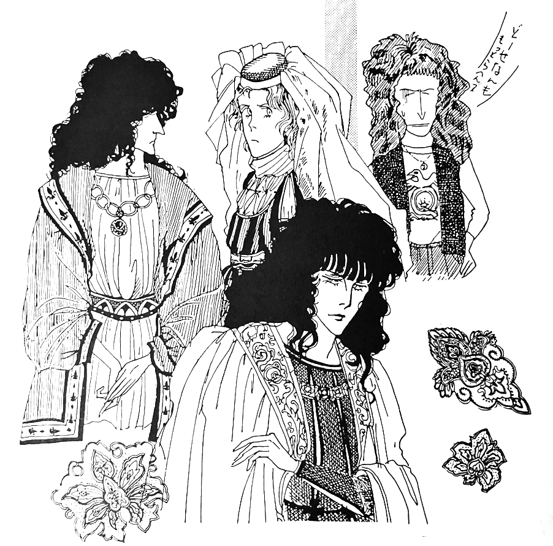

Our Beloved Queen — How Queen Became Popular in Fukuoka
by Manya
In Fukuoka, there weren't many programs showcasing Western music at the time, but there was one ranking program where promoters from various record companies would hang out and fans would come to watch every recording. The fact that Scott MacKenzie's San Fransisco was the no. 1 song on the first episode of this program shows you just how long it had been around. DJ S.M., who was at the show from its inception to 1980, recalls that Warner promoter Mr. N at the time enthusiastically promoted Queen when they debuted, but since fans were excited almost immediately, he didn't remember having to do much after that. "Oh, Queen! That means another no. 1 song!" he'd say to himself. He says it was an interesting time with an active and enthusiastic fanbase, and media outlets and promoters were all on board. S.M. says that while they didn't have to do much, it was recognition of their work that excited the audience, and I believe it was this mutual synergy that led to this particular show's success. Mr. K, who was the station director at the time, recalls that when he first heard Queen, he thought, "Wow, this sound could never be replicated in a live setting. This is amazing!" Some people criticized the use of tape in live performances, but that's now commonplace, and Queen was pioneering it at the time. So it's not that anyone went out of their way to push for them, yet the entire staff was on board.

by Mutsuko
Ah, and we can't forget Mr. N, the aforementioned promoter at Warner. I heard he was really into Freddie, and that his love for him was more instinctive and profound than anything fan-like. At the time, Mr. N not only handled sales and promotion, but also kept the media engaged, so he was basically doing three jobs at once. With Mr. N, the fans, and the media on the bandwagon, Fukuoka's music scene was a well-lubricated machine with a different essence than that of Tokyo. This is why Japanese bands at the time were setting their sights on England and America rather than just Tokyo.
Regarding Queen, there is also this anecdote:
There was a boat tour that took listeners from Fukuoka to Yakushima and Kagoshima, and DJ S.M. went onboard with a local rock band as part of the event. As he was preparing several albums for the record concert on the boat, one of the band members enthusiastically picked up the Queen albums and persistently asked, "What band is this?" and "What's their sound like?" The band member in question was apparently Shibayama, former vocalist of the now legendary band Funhouse, which could be considered the predecessor of Sheena & the Rokkets..
The first thing that came to my mind when I heard this was something my friend, another Queen lover, once said to me: "I like Sheena & the Rokkets, don't you?" There must be some fundamentally similar qualities.
As time passed, Fukuoka grew to be 10% of the nation's economy, and each record company sent talented people from their headquarters to the area. They also mined the region for more promoters. The program director switched over to a younger person who had actually been at Queen's first concerts at the Budoukan, and the Warner region manager also changed over to the second generation: Miss K, who was a female promoter, which was very rare at the time. She persevered and managed to gain media attention despite the fierce advertising battles at the time. She was actually from Fukuoka herself, and was a heavy listener of the radio program I mentioned earlier and a Queen fan from day one, so much so that she had followed the band around. She was also good friends with Mr. N, the first Warner promoter, and had frequented the broadcasting station, providing various inside info on Queen and becoming a familiar face in the industry.
She says, "When I took the job, Queen was already firmly established, and the media knew I was a huge fan so it wasn't too difficult for me. Being a fan, I naturally pushed hard in my position, but it can be a bit tough to deal with something you love so much as your day-to-day job." That must be true, it's hard to make a job out of something you love. But speaking as someone who's been on the opposite end, there's more persuasion power in an employee who personally loves the artist rather than an employee who merely made an impersonal decision about them in a business meeting.
Times have changed, and the original promoter, Mr. N, has left the industry. The second-gen promoter, Miss K, eventually became a reckless housewife, traveling from region to region as a freelance director for broadcast stations. Many promoters have begun to behave like salaried employees, focusing only on formulaic promotions. Many directors refuse to gather information themselves. Listeners now listen to music only as background noise and easily get bored. The music scene has diversified, and the very nature of music programming has changed. Will these cogs ever come together to create a well-oiled machine again? I want to say the answer is no. But there are still many people in every field who simply love music and say that it is their love that drives them today. A promoter at EMI, where Queen is currently, says "The first LP I bought and listened to was A Day at the Races and the first concert I bought tickets to was Queen at the Budoukan in 1979. All my encounters with Western music were through Queen. I believe that taking this job has had a great influence on me."
As for me, if I hadn't encountered Queen, my musical tastes would have been too biased and I probably wouldn't have embraced Japanese pop music, enka, or rock, even though it was for work. The band Queen may have come to an end, but history lives on. I can almost hear Freddie's voice...
The show must go on....